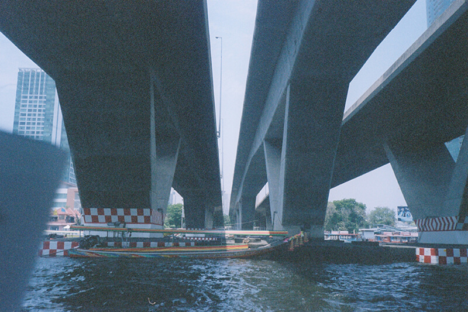
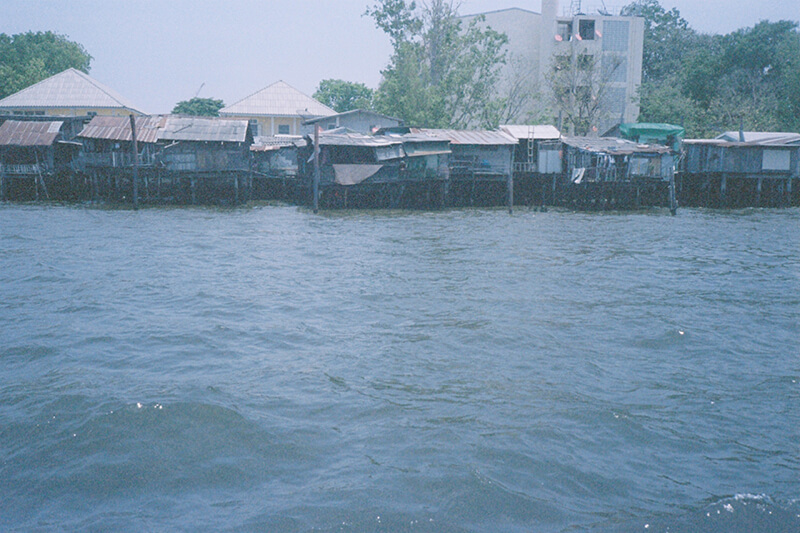
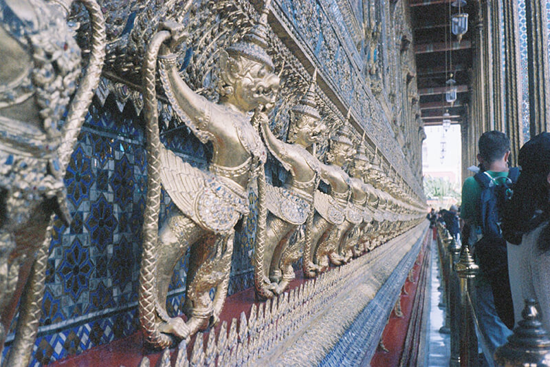

由於昨晚從redsky回來已經蠻晚，第二天也就睡晚一點再出門!!
先搭BTS到Saphan Taksin站從2號出口下來就可以看到搭船處，單程15塊， 但我們貪圖方便快速還是買了150的一日票券，可以不限搭乘次數&提早上船。
 
第一站先到N9的大皇宮
由於實在太熱，還沒進去就開始爆汗了，映入眼簾就是所有貼金的佛寺。就是所有，無一缺漏，完全不低調的浮誇，不過因為也沒有對佛寺的歷史事先做功課，就是走一趟處處讚嘆、看花走馬行程。

而且強國人多到哭爸，一團一團送進來，根本置身在中國，皇宮內有一張告示牌(中文字特大)：
不得大聲喧嘩，除了導遊…
說時遲那時快，看到一群大媽，邊喊著好熱好熱，手輕鬆地把皇宮圍繩拉起來進去坐著乘涼。 都還來不及撿起我掉落的下巴，一樁鬧劇開演，明明旁邊就有許多涼亭可以休息，想是習慣難改。
中午在附近的瑪哈啦市集的餐廳吃飯，發現泰國的餐廳Menu都很讓人難以抉擇。 頁數很厚，因為圖多品項也多，圖片每張都拍得很可口，選擇困難症患者應該會在泰國Double困難。
附近也有些小攤販，衣服都很好看但平均偏貴，就像華山那種文青小市集，買了一些很可愛的刺青紋身貼紙準備送人。
接著搭船到了臥佛寺，看到第一個感想就是，哇真的跟Google上的圖片如出一轍~ 沒有驚喜也沒有失望，有時候覺得什麼資料都先找好的後果，就是到現場一點驚奇也沒有，只是在腦海中的印象又投射回現場而已，反倒是之前上網看到佛祖腳趾覺得很可愛，最想要來親眼見識。
然後就看到腳趾區整修中。
接著晚上是整趟旅程中最貴的行程：Loy Nava 骨董柚木船
比起觀光客愛搭的公主號，有著華麗燈光搭配吵鬧卡拉OK的自助餐，Loy Nava很適合情侶來，船的氣氛很好很安靜，餐點算蠻精緻的，都是一小盤一小盤的上。
至於餐點的美味度，沒算到一點就是因為白天真的太熱，晚上也沒啥食慾，所以我們都只有意思意思吃個幾口，好浪費阿… 而且在泰國這幾天的食物，都一副很想把調味發揮到極致才行，鹹的很鹹 、辣的超辣、甜的更甜!!! 在泰式料理界似乎不流行中庸這概念，歡迎來腸胃訓練營。
總體來說雖然很浪漫，但這一個半小時要泰銖1700，果然還是，
貴到哭爸。
Written on May 26th, 2016 by Paul Le